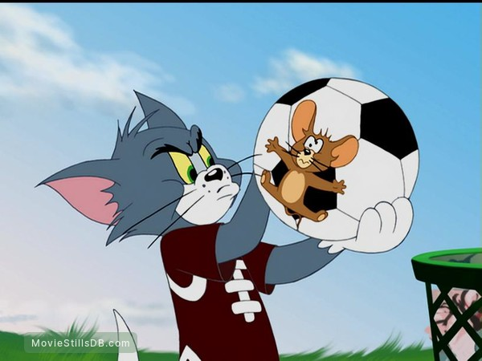
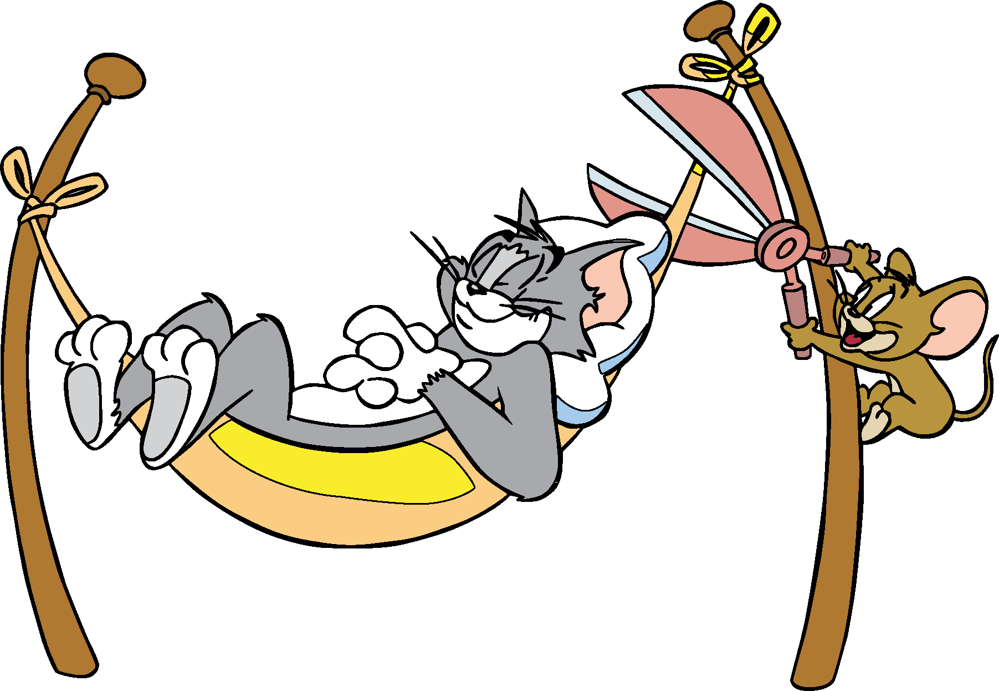
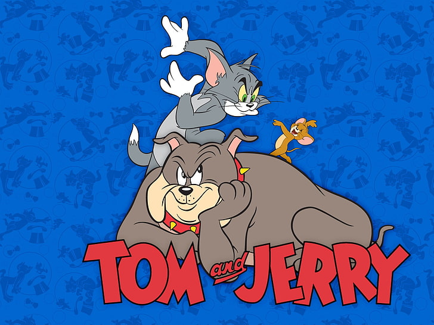

About Tom & Jerry
Tom (named "Jasper" in his debut appearance) is a gray and white domestic shorthair cat. ("Tom" is a generic name for a male cat.) He is usually but not always, portrayed as living a comfortable, or even pampered life, while Jerry (named "Jinx" in his debut appearance) is a small, brown house mouse who always lives in close proximity to Tom. Despite being very energetic, determined and much larger, Tom is no match for Jerry's wits. Jerry also possesses surprising strength for his size, approximately the equivalent of Tom's, lifting items such as anvils with relative ease and withstanding considerable impacts. Although cats typically chase mice to eat them, it is quite rare for Tom to actually try to eat Jerry, but only to hurt or compete with him as usual in a more intimidating strategy to just taunt Jerry (even as revenge), and even to obtain a reward from a human (including his owner(s)/master(s)) for catching Jerry, or for generally doing his job greatly as a house cat. By the final "fade-out" of each cartoon, Jerry usually gets the best of Tom.Tom the fighter
Some relationships are like TOM & JERRY. They tease each other, knock down each other, irritate each other, but can’t live without each other.Life is incomplete without Tom & jerry.
Chessy jerry
Some relationships are like TOM & JERRY. They tease each other, knock down each other, irritate each other, but can’t live without each other.Life is incomplete without Tom & jerry.
Best Friends
Some relationships are like TOM & JERRY. They tease each other, knock down each other, irritate each other, but can’t live without each other.Life is incomplete without Tom & jerry.